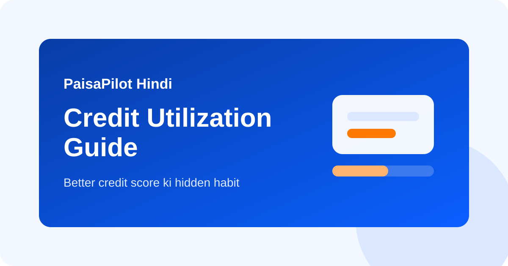

Credit Utilization Guide: बेहतर Credit Score की Hidden Habit
Last updated: March 14, 2026

कई लोग credit card bill time par भरते हैं, फिर भी credit score तेजी से improve नहीं होता। इसका एक बड़ा कारण credit utilization है। यानी आपके पास जितना total limit available है, उसका कितना हिस्सा इस्तेमाल हो रहा है।
Quick Answer
Practical तौर पर total utilization को 30% से नीचे रखना useful माना जाता है, और naturally low रहना और भी बेहतर है। Zero usage जरूरी नहीं है। Controlled usage जरूरी है।
Credit Utilization होता क्या है?
अगर card limit Rs 1,00,000 है और reported outstanding Rs 35,000 है, तो utilization 35% है।
| Total limit | Outstanding | Utilization |
|---|---|---|
| Rs 50,000 | Rs 10,000 | 20% |
| Rs 1,00,000 | Rs 35,000 | 35% |
| Rs 2,00,000 | Rs 1,20,000 | 60% |
यह important क्यों है?
- High usage short-term stress signal देता है
- Lenders को borrower stretched लग सकता है
- Loan application के समय profile कमजोर दिख सकती है
- One-card overload quietly score behavior खराब कर सकता है
Single Card aur Total Utilization
दोनों practical हैं। अगर आपके पास दो cards हैं aur ek par 90% usage है, तो total ratio moderate होने पर भी ek card pressured दिख सकता है। इसलिए spending ko balance करना बेहतर है।
Healthy Range में कैसे रखें
- Billing cycle समझें: statement generation के पास heavy spend report हो सकता है
- Prepay करें: बड़े खर्च के बाद statement आने से पहले part-payment कर दें
- Spend spread करें: हर expense एक ही card पर मत डालें
- Limit exhaustion avoid करें: 80%-100% repeatedly weak signal है
- Old useful card बंद न करें: total limit base कम हो जाता है
Common Mistakes
- सोचना कि due date पर full payment मतलब utilization matter नहीं करेगा
- Reward points के लिए ek hi card heavily use करना
- High utilization phase में multiple new cards apply करना
- No-fee old card बंद करके total limit घटा देना
Higher Limit लेना चाहिए?
अगर repayment discipline strong है, तो higher limit ratio improve कर सकती है। लेकिन फायदा तभी है जब spending behavior controlled रहे। Limit बढ़ने का मतलब spending बढ़ाना नहीं है।
Loan लेने से पहले
अगर अगले 2-3 महीनों में loan apply करना है, तो card balances clean रखें। Large spends कम करें और statement-generated outstanding को low रखें।
FAQ
क्या 0% utilization best है?
जरूरी नहीं। Regular low usage with on-time payment अक्सर healthier pattern दिखाता है।
Safe target क्या है?
Below 30% एक practical benchmark है।
Debit card usage score improve करता है?
नहीं। Credit score mostly credit products पर depend करता है।
संबंधित लेख
Credit Score Improvement, Credit Card Basics, लोन EMI प्लानिंग
Editorial Note: यह सामग्री educational purpose के लिए है।